Branding
FanZone
A brand identity built for FanZone, a World Cup fan experience platform, developed across a 3-day brand identity brief.

(01) — The brief
The Brief
This project came from a 3-day brand identity brief run by @the_designation on X (Twitter). The task was to design a complete visual identity for FanZone, a brand built around the World Cup fan experience, covering everything from live match screenings and fan meetups to merchandise and community events.
The brief asked for an identity that felt energetic, memorable, and adaptable across both digital and physical touchpoints, celebrating the excitement and culture of football. It called for a specific set of deliverables:
- Primary logo
- Secondary logo variation
- Color palette
- Typography system
- Event pass mockup
- Social media post mockup
- Brand presentation sheet
With three days to take this from brief to finished deliverables, the challenge was less about endless iteration and more about making confident decisions early, then carrying them consistently across every touchpoint.
(02) — The process
The Process
Logo concept
The mark centers on a stylized "Z," shaped to suggest a figure in motion, a nod to the energy and movement of football itself. A small circle sits above it, standing in for a ball. The wordmark pairs a lowercase, rounded sans with that mark, keeping the overall lockup approachable rather than corporate.
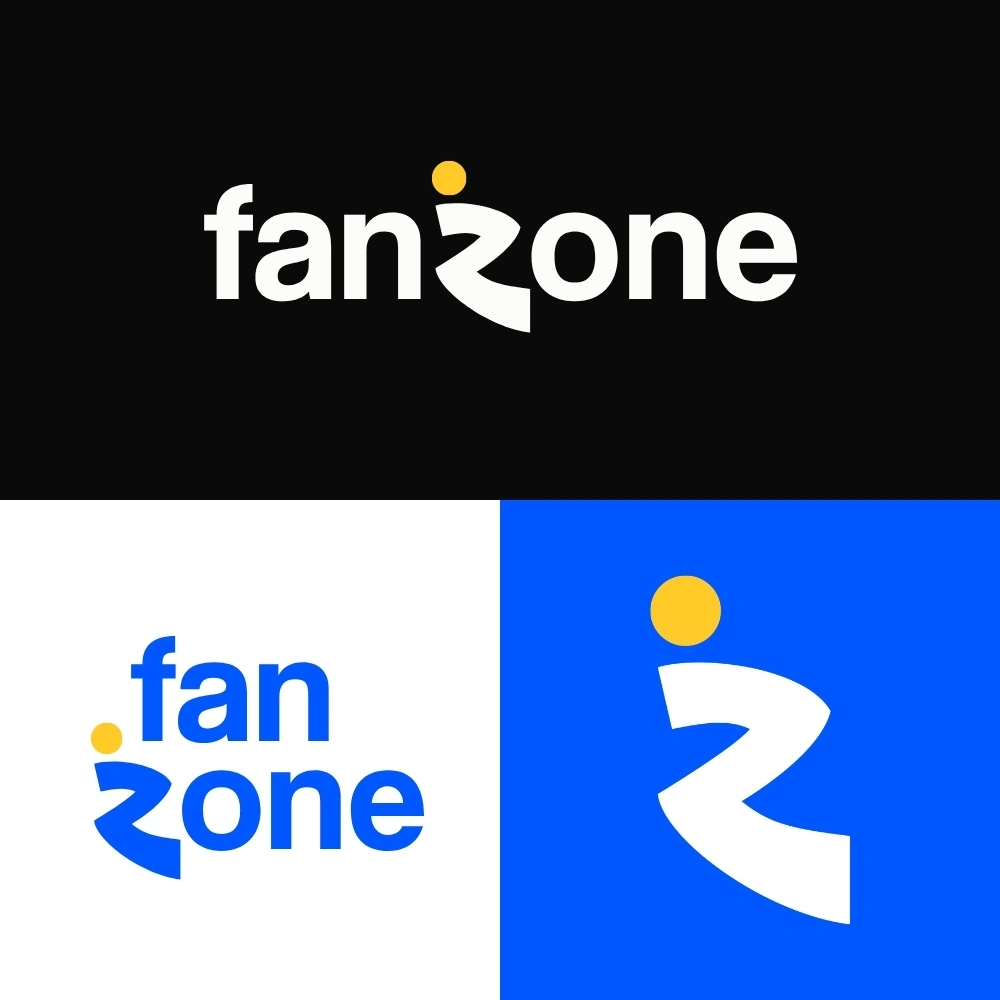
Primary logo, secondary logo, and logomark across key brand backgrounds.
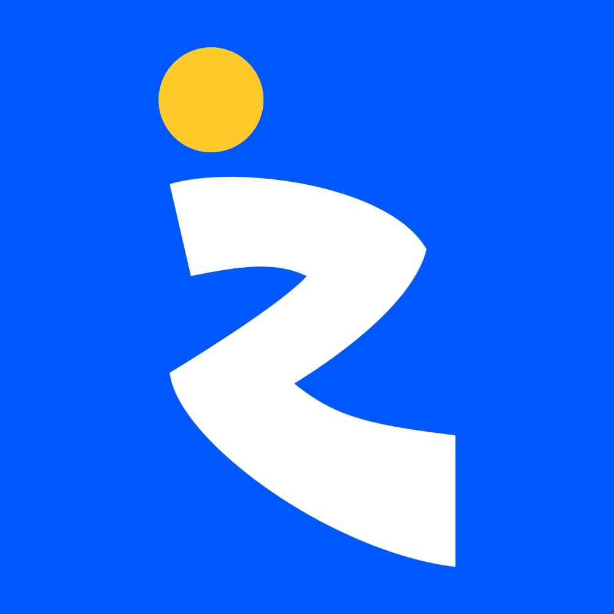
Standalone logomark, used for app icons and small-space applications.
Color system
Rather than building the identity around one signature brand color, I wanted FanZone to feel like it was drawing from the energy of fan culture itself, closer to a stadium crowd than a single corporate palette. That led to a system built on contrast: a confident blue as the anchor, paired with yellow, green, and pink as equally active accents, with a near-black "Midnight" as the neutral base.
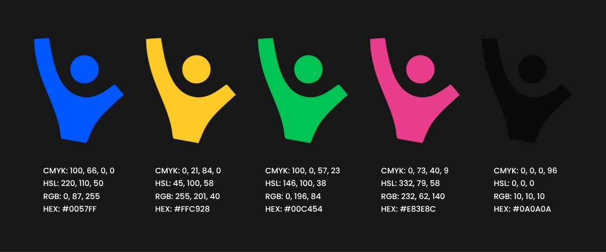
A few references shaped this direction early on:
- An ICC Cricket World Cup 2027 logo concept by Vishwa, for how it used a multi-color palette rooted in the host nations' flags rather than one dominant brand color.
- A Cold Stone rebrand concept by Bhroovi Gupta, featured on PRINT Magazine, for its playful, saturated color blocking.
- A brand style guide layout I saved for inspiration on Pinterest, mainly for its bold, contrasting color choices.
Pattern
To give the brand a bit of texture beyond the logo itself, I built a repeating pattern in Illustrator using abstract figures with their hands raised, meant to represent fans celebrating, paired with simple dots and bars pulled from the color system. It reads as energetic and slightly playful without competing with the logo when the two appear together on merchandise.
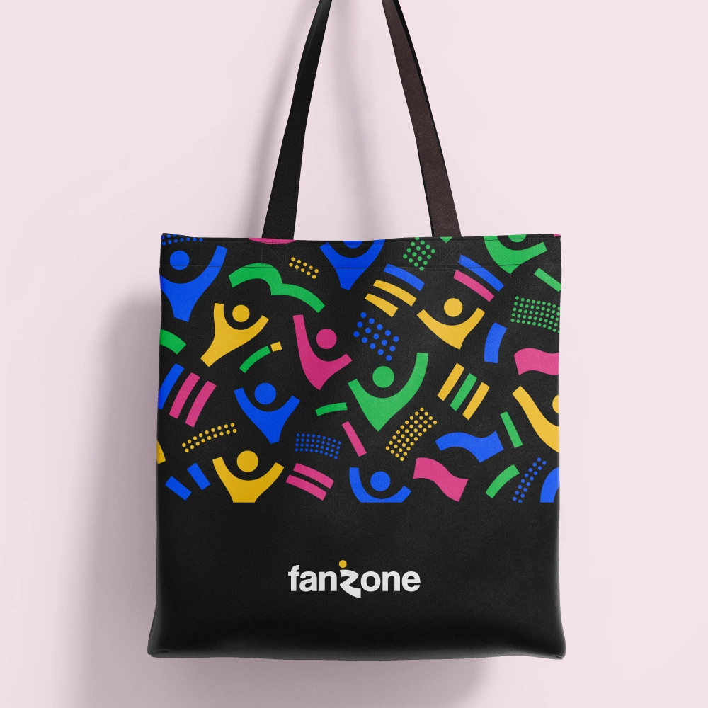
The pattern applied to a tote bag mockup.
Typography
For the wordmark, I used Coolvetica, a bold, slightly condensed sans with a retro, energetic feel that suited FanZone's sporty tone well. It holds up at both a huge scale, like signage and event backdrops, and a small one, like app icons and social avatars. I paired it with a cleaner, more neutral sans for supporting text such as taglines and social captions, so the system stays legible without fighting the logo for attention.
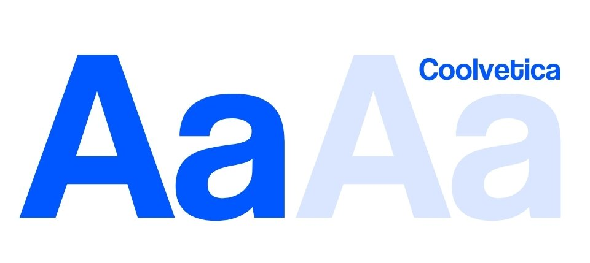
Coolvetica Font
Mockups
The brief called for the identity to be shown across real applications, not just presented as a logo on its own, so the last stretch of the project was about placing the system into actual touchpoints.
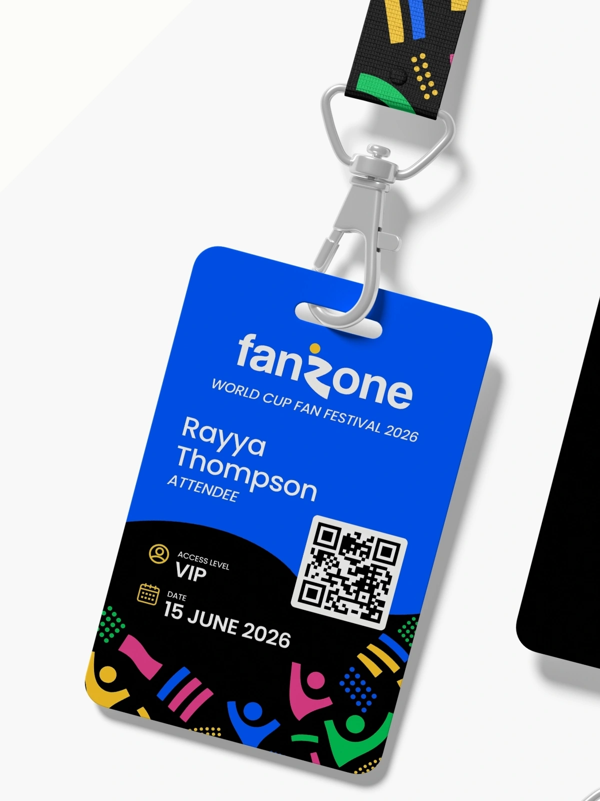
Event Pass Front
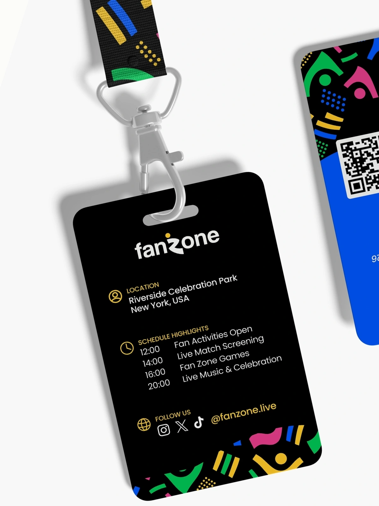
Event Pass Back
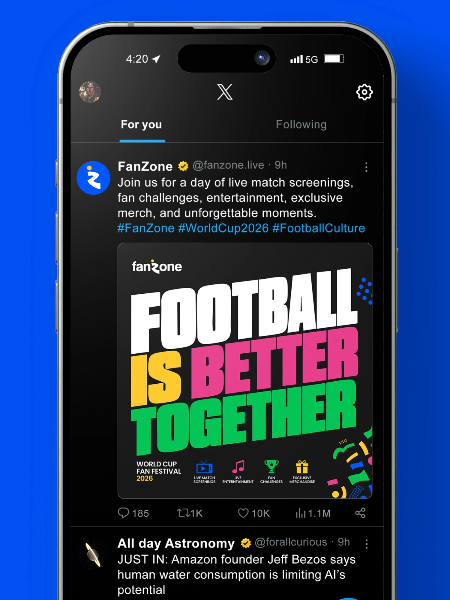
Social Media Post
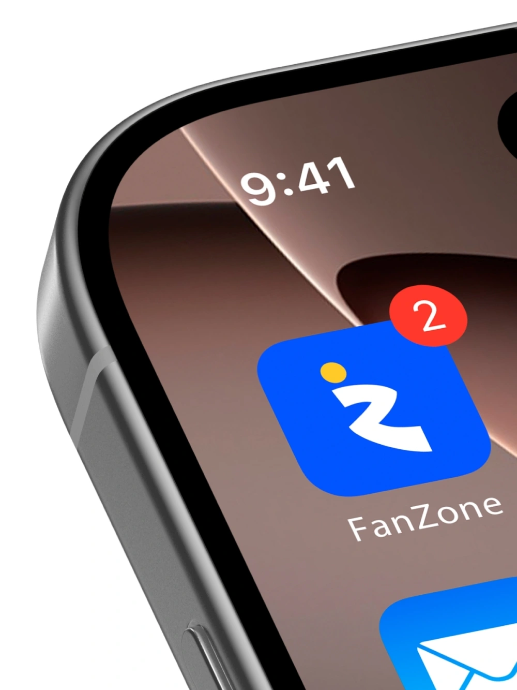
App Icon
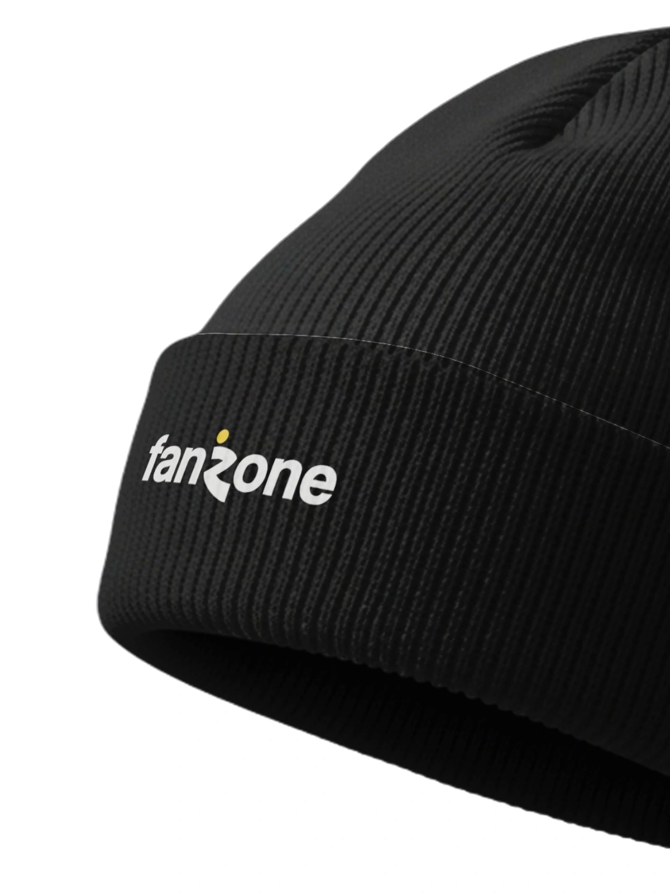
Beanie
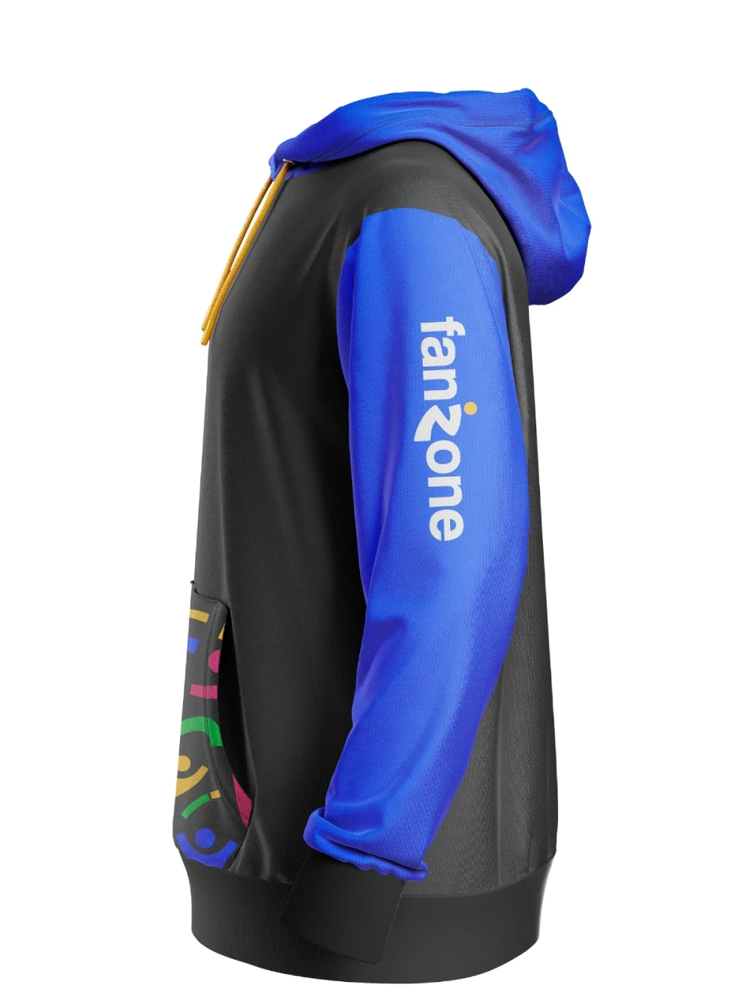
Hoodie
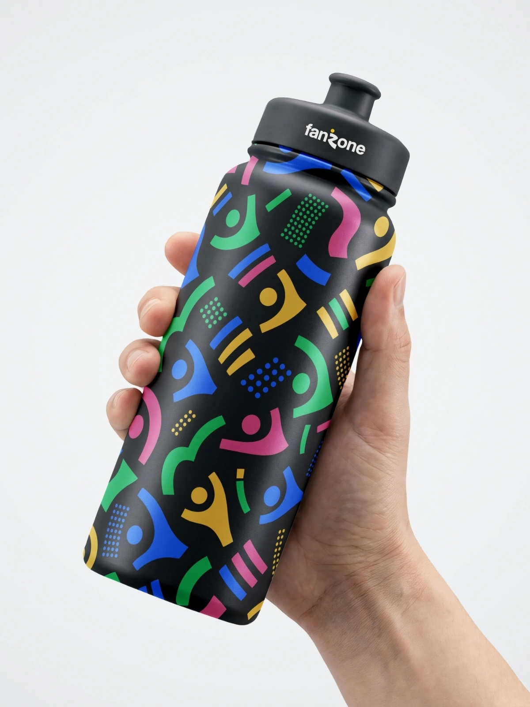
Sport Bottle
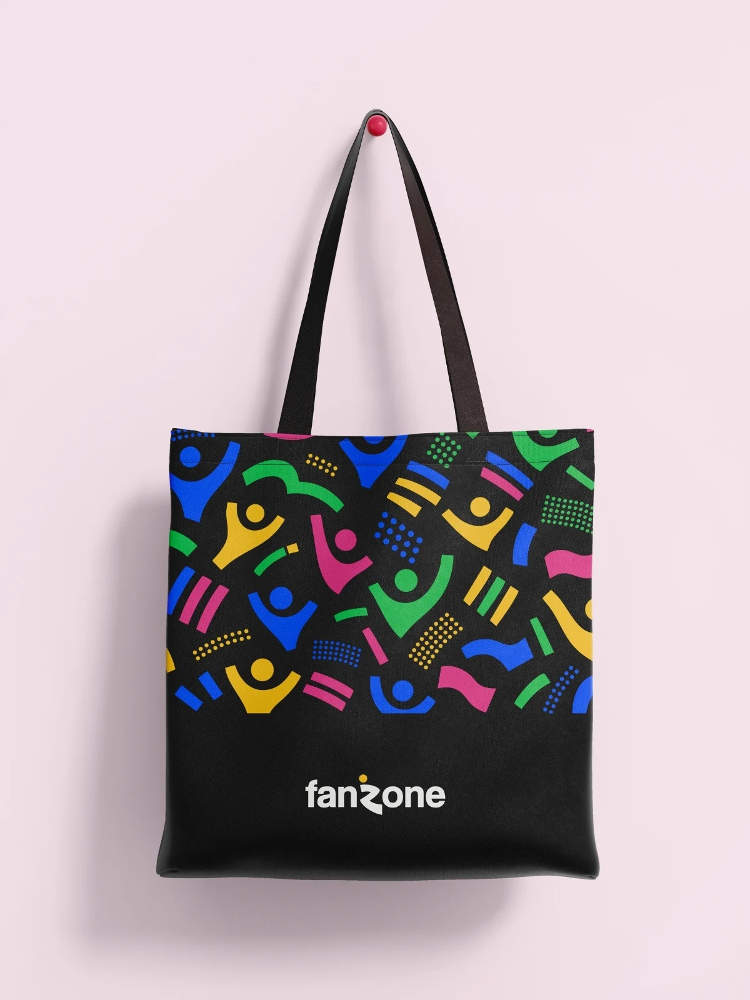
Tote Bag
Swipe →
(03) — What I learned
What I Learned
Working to a 3-day brief forced a different kind of decision-making than I'm used to. There wasn't room for five rounds of logo exploration, so I had to commit to a direction early and trust it through to the final deliverable.
Building a color system around contrast rather than a single brand color was new territory for me on this project. It meant figuring out how blue, yellow, green, and pink could all sit together as active accents and still read as one coherent brand.
It also pushed me to think about an identity across many touchpoints at once, logo, pattern, merch, event pass, social post, rather than designing a logo in isolation.